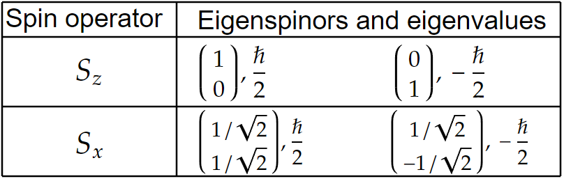
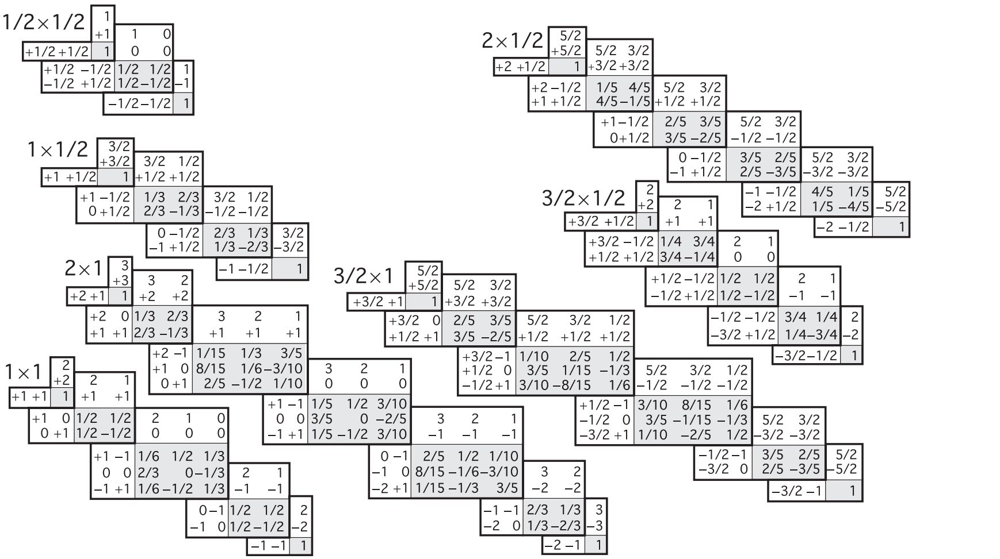
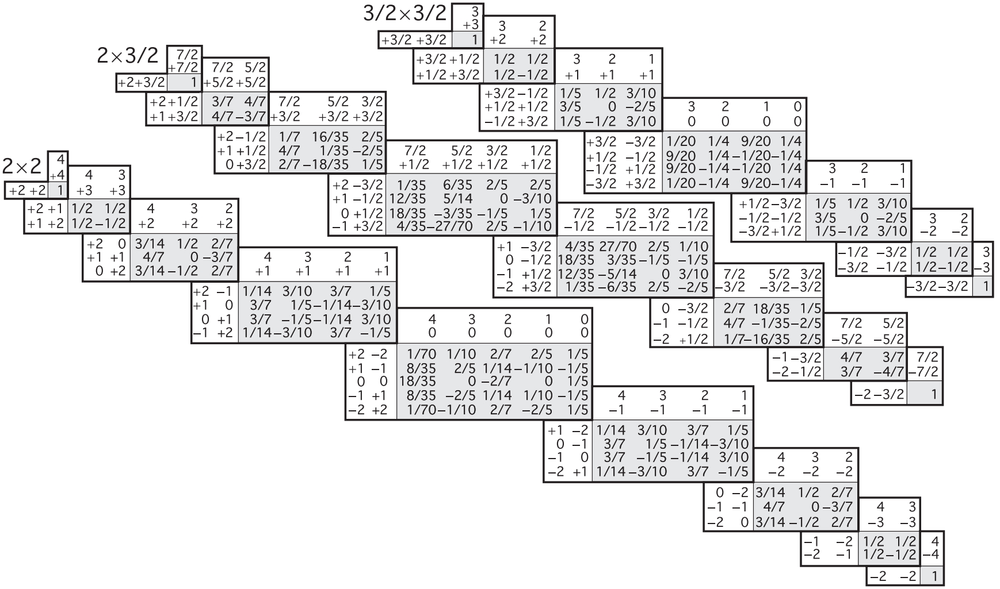

Below is a collection of formulas and key ideas for a second upper level course in quantum mechanics.
Basics.
Orbital Angular Momentum.
Spin Angular Momentum.
Addition of Angular Momentum.
Path Integrals.
Density Operators.
(Non-degenerate) Time Independent Perturbation Theory.
(Degenerate) Time Independent Perturbation Theory.
Hydrogen Fine Structure.
Zeeman effect.
Identical Particles.
Concepts from probability (in the context of QM):
\begin{align*} \text{Expectation value (average) of $O $} \;\; \langle \hat{O} \rangle &= \langle \psi |\hat{O}|\psi \rangle \\ \text{Variance} \;\; \sigma _O ^2 &= \langle \hat{O}^2 \rangle -\langle \hat{O} \rangle ^2 \\ \text{Standard deviation} \;\; \sigma _O &= \sqrt{\langle \hat{O}^2 \rangle -\langle \hat{O} \rangle ^2 } \end{align*}Basic QM operators:
\begin{align*} \text{Position} \;\; \hat{x} &= x \\ \text{Momentum} \;\; \hat{p_x} &= -i\hbar \frac{\partial }{\partial x} \end{align*}Uncertainty principle:
\[\sigma ^2 _A\sigma _B^2 \geq \left( \frac{1}{2i}\langle \left[ \hat{A},\hat{B} \right] \rangle \right) ^2 \]Operators of compatible observables commute. They share simulatenous eigenstates.
Classical definition of angular momentum:
\begin{align*} \mathbf{L} &= \mathbf{r}\times \mathbf{p} \\ L_x &= yp_z-zp_y \tag{And cyclic substitutions} \end{align*}Commutation relations for rotational angular momentum operators:
\[ \left[ L_x,L_y \right] =i\hbar L_z \tag{And cylic permutations} \]Quantitative description of their incompatibility as observables:
\[\sigma _{L_x}\sigma _{L_y}\geq \frac{\hbar }{2}|\langle L_z \rangle | \]Square of the total angular momentum:
\[L^2 \equiv L_x^2 +L_y^2 +L_z^2 \]$L^2 $ and $L_i $ are compatible observables.
Ladder operators
\begin{align*} L_{\pm} &\equiv L_x \pm iL_y \\ \left[ L_z,L_{\pm} \right] &= \pm \hbar L_{\pm}\\ \left[ L^2 ,L_{\pm} \right] &= 0 \end{align*}If $L_zf=\mu f $, then
\[L_z(L_{\pm }f)= (\mu \pm \hbar )(L_{\pm}f) \](i.e., $L_{\pm} $ can create an eigenfunction given one, with eigenvalue offset by $\pm \hbar $).
Let $f_{\text{top} } $ be the top function ($L_+ f_{\text{top} }=0 $).
\begin{align*} \text{Let} \;\;L_z f_{\text{top} } &= \hbar lf_{\text{top} } \\ \text{then} \;\; L^2 f_{\text{top} } &= \hbar ^2 l(l+1)f_{\text{top} } \end{align*}Let $f_{\text{bottom} } $ be the bottom function ($L_-f_{\text{bottom} }=0 $).
\begin{align*} \text{Let} \;\;L_zf_{\text{bottom} } &= \hbar l' f_{\text{bottom} } \\ \text{then} \;\; L^2 f_{\text{bottom} } &= \hbar ^2 l'(l'-1) \end{align*}Takeaway:
\[l'=-l \]Orbital angular momentum eigenfunctions
$f_{l}^{m} $ defines an eigenfunction for both $L^2 $ and $L_z $:
\begin{align*} L^2 f^{m}_l &= \hbar ^2 l(l+1)f^{m}_l \\ L_zf^{m}_l &= \hbar mf_{l}^{m} \end{align*}Where
\[f^{m}_l = Y^{m}_l(\theta ,\phi ) \tag{Spherical Harmonics}\]And
\begin{align*} l &= 0,1/2,1,3/2,\cdots \\ m &= -l,-l+1,\cdots ,l-1,l \tag{$2l+1 $ options for each $l $} \end{align*}Ladder operator effects on $f^{m}_l $:
\begin{align*} L_+f^{m}_l &= \hbar \sqrt{(l-m)(l+m+1)}\; f^{m\color{red}+1\color{black}}_l \\ L_-f^{m}_l &= \hbar \sqrt{(l+m)(l-m+1)}\; f^{m\color{red}-1\color{black}}_l \end{align*}Classical definition:
\[\mathbf{S}=I\boldsymbol{\omega} \]Commutation relations
\[ \left[ S_x,S_y \right] =i\hbar S_z\tag{And cyclic permutations} \]A spin eigenstate has a definite $s $ and $m $ value.
\begin{align*} s &= 0,\frac{1}{2},1,\frac{3}{2},2,\cdots \\ m &= -s,-s+1,\cdots ,s-1,s \end{align*}Such that they form eigenvectors of $S^2 $ and $S_z $:
\begin{align*} S^2 | s\;m \rangle &= \hbar ^2 s(s+1)| s\;m \rangle \\ S_z| s\;m \rangle &= \hbar m| s\;m \rangle \end{align*}Ladder operators:
\[S_{\pm}| s\;m \rangle =\hbar \sqrt{s(s+1)-m(m\pm 1)}\;| s\;(m\pm 1) \rangle \]$s $ is said to be immutable. It is a characteristic value for a given particle. It is fixed.
Spin 1/2
With $s=1/2 $, $m=-1/2 $ or $1/2 $. They form a basis for spinors:
\begin{align*} \chi _+ &= \begin{pmatrix} 1 \\ 0 \\ \end{pmatrix} \\ \chi _- &= \begin{pmatrix} 0 \\ 1 \\ \end{pmatrix} \end{align*}General spinor in the above basis:
\begin{align*} \chi &= \begin{pmatrix} a \\ b \\ \end{pmatrix} \\ &= a\chi _++b\chi _- \end{align*}The three spin operators ($\mathbf{S}=(S_x,S_y,S_z) $) are
\[\mathbf{S}=\frac{\hbar }{2}\boldsymbol{\sigma } \]Where the Pauli spin matrices are ($\boldsymbol{\sigma } =(\sigma _x,\sigma _y,\sigma _z)$):
\begin{align*} \sigma _x &= \begin{pmatrix} 0 & 1 \\ 1 & 0 \\ \end{pmatrix} \\ \sigma _y &= \begin{pmatrix} 0 & -i \\ i & 0 \\ \end{pmatrix} \\ \sigma _z &= \begin{pmatrix} 1 & 0 \\ 0 & -1 \\ \end{pmatrix} \end{align*}Further,
\begin{align*} S^2 &= \frac{3}{4}\hbar ^2 \begin{pmatrix} 1 & 0 \\ 0 & 1 \\ \end{pmatrix} \\ S_+ &= \hbar \begin{pmatrix} 0 & 1 \\ 0 & 0 \\ \end{pmatrix} \\ S_- &= \hbar \begin{pmatrix} 0 & 0 \\ 1 & 0 \\ \end{pmatrix} \end{align*}In the $\left\lbrace \chi _+,\chi _- \right\rbrace $ basis,
In the same basis, the probabilities of measuring $\pm \hbar /2 $ from $S_x $ given $\begin{pmatrix} a \\ b \\ \end{pmatrix} $ are:
\[P_{S_x} \left( \pm \frac{\hbar }{2} \right) = \frac{1}{2}|a\pm b|^2 \]Spin 1
In the $S_z $ basis, we have the three basis states
\[\chi _+=\begin{pmatrix} 1 \\ 0 \\ 0 \\ \end{pmatrix} ,\;\;\; \chi _0 = \begin{pmatrix} 0 \\ 1 \\ 0 \\ \end{pmatrix} ,\;\;\; \chi _- = \begin{pmatrix} 0 \\ 0 \\ 1 \\ \end{pmatrix} \]Spin matrices:
\begin{align*} S_x &= \frac{\hbar }{\sqrt{2}}\begin{pmatrix} 0 & 1 & 0 \\ 1 & 0 & 1 \\ 0 & 1 & 0 \\ \end{pmatrix} \\ S_y &= i\frac{\hbar }{\sqrt{2}}\begin{pmatrix} 0 & -1 & 0 \\ 1 & 0 & -1 \\ 0 & 1 & 0 \\ \end{pmatrix} \\ S_z &= \hbar \begin{pmatrix} 1 & 0 & 0 \\ 0 & 0 & 0 \\ 0 & 0 & -1 \\ \end{pmatrix} \end{align*}Ladder spin 1 matrices:
\begin{align*} S_+ &= \sqrt{2}\hbar \begin{pmatrix} 0 & 1 & 0 \\ 0 & 0 & 1 \\ 0 & 0 & 0 \\ \end{pmatrix} \\ S_- &= \sqrt{2}\hbar \begin{pmatrix} 0 & 0 & 0 \\ 1 & 0 & 0 \\ 0 & 1 & 0 \\ \end{pmatrix} \end{align*}Note that these relations hold:
\begin{align*} S_x &= \frac{S_++S_-}{2} \\ S_y &= \frac{S_+-S_-}{2i} \end{align*}Given two particles (for concreteness, the following formulas are in terms of spin angular momentum), $| s_1 \;m_1 \rangle $ and $| s_2 \;m_2 \rangle $, there exist composite states
\[| s'\;m' \rangle \equiv| s_1 \;s_2 \;m_1 \;m_2 \rangle \]Where $m' $ is uniquely determined:
\[m'=m_1 +m_2 \]While $s' $ can take one of many values:
\[s' = (s_1 +s_2 ),\;(s_1 +s_2 -1),\;(s_1 +s_2 -2),\;\cdots ,\;|s_1 -s_2 | \] Clebsch-Gordan coefficientsGiven a combined (coupled) state $| s\;m \rangle $, we can decompose it as a linear combination of composite states:
\[| s\;m \rangle =\sum_{m_1 +m_2 =m}^{} C^{s_1 s_2 s}_{m_1 m_2 m}| s_1 \;s_2 \;m_1 \;m_2 \rangle \]  Source: Particle Data Group.
The initial state $| \psi \rangle $ in the position representation is written as
\[\langle x_0 |\psi (t_0 ) \rangle \]Its time evolution
\[\langle x'|\psi (t') \rangle = \int_{-\infty }^{\infty } dx_0 \langle x',t'|x_0 ,t_0 \rangle \langle x_0 |\psi (t_0 ) \rangle \]Depends on the propagator, which for a free particle takes the form
\[\langle x',t'|x_0 ,t_0 \rangle =\sqrt{\frac{m}{2\pi \hbar i(t'-t_0 )}}\exp \left( \frac{im(x'-x_0 )^2 }{2\hbar (t'-t_0 )} \right) \](Formal) definition of the path-integral:
\[\langle x',t'|x_0 ,t_0 \rangle =\lim_{N\to \infty }\int dx_1 \cdots \int dx_{N-1}\int \frac{dp_1 }{2\pi \hbar }\cdots \int \frac{dp_N}{2\pi \hbar }\exp \left( \frac{i}{\hbar }\sum_{i=1}^{N} \left[ p_i \frac{(x_i -x_{i-1})}{\Delta t}-E(p_i ,x_{i-1}) \right] \Delta t \right) \]For Hamiltonians of the form $\hat{H}=\frac{\hat{p}^2 _x}{2m}+V(\hat{x}) $, the path integral takes the form:
\[\langle x',t'|x_0 ,t_0 \rangle = \int_{x_0 }^{x'} \mathcal{D} \left[ x(t) \right] e^{iS \left[ x(t) \right] /\hbar } \]Where
\[\int_{x_0 }^{x'} \mathcal{D} \left[ x(t) \right] \equiv \lim_{N\to \infty }\int dx_1 \cdots \int dx_{N-1} \left( \frac{m}{2\pi \hbar i\Delta t} \right) ^{N/2} \]And $S $ is the action:
\[S \left[ x(t) \right] \int_{t_0 }^{t'} dt\;L(x,\dot{x}) \]For a free particle ($V(x)=0 $),
\[\langle x',t'|x_0 ,t_0 \rangle =\sqrt{\frac{m}{2\pi \hbar i(t'-t_0 )}}\exp \left( \frac{im}{2\hbar }\frac{(x'-x_0 )^2 }{(t'-t_0 )} \right) \]A state is said to be pure if it can be written in terms of the basis states:
\[| \psi \rangle =\sum_{i}^{} c_i| \phi _i \rangle \]A mixed state can't.
For a pure state $| \psi \rangle $:
\begin{align*} \hat{\rho } &= | \psi \rangle \langle \psi | \\ \rho _{ij} &= \langle i | \psi \rangle \langle \psi | j \rangle \tag{$\rho _{ij}^* = \rho _{ji} $} \\ \text{tr} (\hat{\rho }) &= 1 \\ \text{tr} (\hat{\rho }^2 ) &= 1 \tag{$\hat{\rho }^2 =\hat{\rho }$}\\ \text{Expectation value} \;\langle A \rangle &= \text{tr} (\hat{A}\hat{\rho })\\ i\hbar \frac{d\hat{\rho }(t)}{dt} &= \left[ \hat{H},\hat{\rho }(t) \right] \end{align*}For a mixed state:
\begin{align*} \hat{\rho } &= \sum_{k}^{} p_k| \psi ^{(k)} \rangle \langle \psi ^{(k)} | \tag{$\sum_{k}^{} p_k=1$}\\ \rho _{ij} &= \sum_{k}^{} p_k\langle i | \psi ^{(k)} \rangle \langle \psi ^{(k)} | j \rangle \\ \text{tr} (\hat{\rho }) &= 1 \\ \text{tr} (\hat{\rho }^2 ) &< 1 \\ \text{Expectation value} \;\langle A \rangle &= \text{tr} (\hat{A}\hat{\rho }) \end{align*}Perturbation theory is used on Hamiltonians of the form
\[\hat{H}=\hat{H}_0 +\lambda \hat{H}_1 \]Where the eigenstates and eigenvalues of $\hat{H}_0 $ are known exactly.
Perturbations will introduce $n $th order corrections to the eigenstates ($| \phi _i^{(n)} \rangle $ represents the $n $th order correction to the $i $th eigenstate) and the eigenvalues (energies $E_{n}^{(i)} $).
\begin{align*} | \psi _i \rangle &= | \psi _i ^{(0)} \rangle +\lambda | \psi _i^{(1)} \rangle +\lambda ^2 | \psi _i^{(2)} \rangle +\cdots \\ E_i &= E_i ^{(0)} +\lambda E_i^{(1)}+\lambda ^2 E_{i}^{(2)}+\cdots \end{align*}In a nondegenerate system, the first order corrections are:
\begin{align*} E_i^{(1)} &= \langle \psi _i^{(0)}|\hat{H}_1 |\psi _i^{(0)} \rangle \\ | \psi _i ^{(2)} \rangle &= \sum_{k\neq i}^{} | \psi _k^{(0)} \rangle \frac{\langle \psi _k^{(0)}|\hat{H}_1 | \psi _i^{(0)} \rangle }{E_i^{(0)}-E_k^{(0)}} \end{align*}The second order corrections are:
\begin{align*} E_i^{(2)} &= \langle \psi _i^{(0)}|\hat{H}_1 |\psi _i^{(1)} \rangle \\ &= \sum_{k\neq i}^{} \frac{|\langle \psi _k^{(0)}|\hat{H}_1 |\psi _i^{(0)} \rangle |^2 }{E_i^{(0)}-E_k^{(0)}} \end{align*}If we have $N $-degeneracy for a given energy level, then any linear combination of the $N $ states is still an eigenstate of the Hamiltonian.
Perturbations break/lift degeneracy.
When a perturbation is shut off, the system goes into orthogonal linear combinations of degenerate states. These are known as the "good" states.
A matrix is constructed using the perturbation:
\[W_{ji}=\langle \psi _{n,j}^{(0)}|\hat{H}_{1}|\psi _{n,i}^{(0)} \rangle \]The eigenvalues of this matrix are the 1st order corrections, while the eigenvectors of this matrix are the "good states".
For $N=2 $ twofold degeneracy:
\[\begin{pmatrix} W_{11} & W_{12} \\ W_{21} & W_{22} \\ \end{pmatrix} \begin{pmatrix} c_1 \\ c_2 \\ \end{pmatrix} =E_n ^{(1)}\begin{pmatrix} c_1 \\ c_2 \\ \end{pmatrix} \]With general solution
\[E^{(1)}_{\pm}\frac{1}{2} \left( W_{11}+W_{22}\pm \sqrt{(W_{11}-W_{22})^2 +4|W_{12}|^2 } \right) \]Original states are "good" if $W_{12}=W_{21}=0 $, and we find that the eignevectors are $(1\;0) $ and $(0\;1) $. The first order energy corrections are given as in nondegenerate perturbation theory.
Theorem: Let $A $ be a hermitian operator that commutes with $H^0 $ and $H' $. If the degenerate eigenfunctions $\psi _a^{(0)} $ and $\psi _b^{(0)} $ are also (1) eigenfunctions of $A $, and (2) with distinct eigenvalue ($A\psi ^{(0)}_a=a \psi _a^{(0)} $, $A\psi _b^{(0)}=b\psi _b^{(0)} $, for $a\neq b $), then $\psi ^{(0)}_{a,b} $ are the "good" states in perturbation theory.
Hydrogen atom basics:
The Bohr Hamiltonian takes into account the electron kinetic energy plus Coulombic potential energy:
\[H_{\text{Bohr} }=-\frac{\hbar ^2 }{2m}\nabla ^2 -\frac{e^2 }{4\pi \epsilon _0 }\frac{1}{r} \]Fine structure constant:
\[\alpha \equiv \frac{e^2 }{4\pi \epsilon _0 \hbar c} \]Fine structure perturbations are characterized by $\alpha $: a relativistic correction and a spin-orbit coupling.
Relativistic correction perturbation:
\begin{align*} H_1^{\text{relativistic} } &= -\frac{p^4 }{8m^3 c^2 } \\ E_{\text{relativistic} }^{(1)} &= -\frac{(E_n )^2 }{2mc ^2 } \left[ \frac{4n}{l+\frac{1}{2}}-3 \right] \end{align*}Note that $n $, $l $, $m $ are good quantum numbers in this situation.
Spin-Orbit coupling:
The electron sees a proton circling around: charges moving in circles create magnetic fields. With Hamiltonian (magnetic moment $\mu $)
\begin{align*} H &= -\mu \cdot \mathbf{B} \\ \mathbf{B} &= \frac{1}{4\pi \epsilon _0 }\frac{e}{mc ^2 r^3 }\mathbf{L} \tag{Where $\mathbf{S} $ is the orbital angular momentum}\\ \mu _e &= -\frac{e}{m}\mathbf{S} \tag{Where $\mathbf{S} $ is the spin angular momentum} \end{align*}The right perturbation has to take into account the acceleration (non-inertiality of the frame) of the electron. Thomas precession corrects this issue with a factor of $1/2 $:
\[H^{\text{spin-orbit} }_{1}= \left( \frac{e^2 }{8\pi \epsilon _0 } \right) \frac{1}{m ^2 c^2 r^3 }\mathbf{S}\cdot \mathbf{L} \]Note that $\mathbf{L} $ and $\mathbf{S} $ don't commute with $H^{\text{spin-orbit} }_{1} $, but $L^2 ,S^2 , $ and total AM $\mathbf{J}\equiv \mathbf{L}=\mathbf{S} $ do commute, and thus are conserved. Using their eigenstates for perturbation theory, we find
\[E^{(1)}_{\text{spin-orbit} }=\frac{(E_n)^2 }{mc ^2 } \left[ \frac{n\left\lbrace j(j+1)-l(l+1)-3/4 \right\rbrace}{l(l+1/2)(l+1)} \right] \]Conclusions
The first order fine structure corrections total to:
\[E^{(1)}_{\text{fs} }=\frac{(E_n )^2 }{2m c^2 } \left( 3-\frac{4n}{j+1/2} \right) \]So to first order, the Hydrogen atom energy is (Bohr + 1st order FS):
\[E_{nj}=-\frac{13.6\;\text{eV} }{n^2 } \left[ 1+\frac{\alpha ^2 }{n^2 } \left( \frac{n}{j+1/2}-\frac{3}{4} \right) \right] \]A description of the hydrogen atom in a uniform external magnetic field $\mathbf{B}_{\text{ext} } $.
With perturbation:
\[H_1 ^{\text{Zeeman} } =-(\mu _l+\mu _s)\cdot \mathbf{B}_{\text{ext} } \] \begin{align*} H_1 ^{\text{Zeeman} } &= -(\mu _l+\mu _s)\cdot \mathbf{B}_{\text{ext} } \\ \text{Where} \;\; \mu _s &= -\frac{e}{m}\mathbf{S}\tag{Magnetic dipole moment due to electron spin}\\ \text{and} \;\; \mu _l &= -\frac{e}{2m}\mathbf{L}\tag{dipole moment due to orbital motion} \end{align*}Weak-Field Zeeman effect
When $B_{\text{ext} }\ll B_{\text{int} } $, so the fine structure perturbation dominates.
The $| n\;l\;j\;m_j \rangle $ states are "good" states.
To first order,
\[E^{(1)}_{\text{Zeeman} } = \langle n\;l\;j\;m_j|H_1 ^{\text{Zeeman} }|n\;l\;j\;m_j \rangle = \mu _Bg_JB_{\text{ext} }m_j \]Where
\begin{align*} g_J &= \left[ 1+\frac{j(j+1)-l(l+1)+s(s+1)}{2j(j+1)} \right] \tag{Landé $g $-fractor.} \\ \mu _B &= \frac{e\hbar }{2m}=5.788\times 10^{-5}\;\text{eV} /T \tag{Bohr magneton} \end{align*}Strong-Field Zeeman effect
When $B_{\text{ext} }\gg B_{\text{int} } $, so the Zeeman effect/perturbation dominates.
The unperturbed energies are
\[E_{n,m_l,m_s}^{\text{Bohr} +\text{Zeeman} }=-\frac{13.6\;\text{eV} }{n^2 }+\mu _BB_{\text{ext} } (m_l+2m_s) \]The "good" states are $| n\;l\;m_l\;m_s \rangle $.
The first order correction (from fine structure) is
\[E_{\text{fs} }^{(1)}=\frac{13.6\;\text{eV} }{n^3 }\alpha ^2 \left\lbrace \frac{3}{4n}- \left[ \frac{l(l+1)-m_lm_s}{l(l+1/2)(l+1)} \right] \right\rbrace \]The wavefunction for a system of two particles is of the form $\Psi (\mathbf{r}_1 ,\mathbf{r}_2 ,t) $. When $V $ is time-independent, we can still use separation of variables to write the solution as:
\[\Psi =\psi (\mathbf{r}_1 ,\mathbf{r}_2 )e^{-iEt/\hbar } \]2 cases where the TISE for 2 particles reduces to a 1 particle problem:
In QM, we can't tell one particle from another.
Boson states are symmetric under interchange:
\[\psi _+(\mathbf{r}_2 ,\mathbf{r}_1 )=\psi _+(\mathbf{r}_1 ,\mathbf{r}_2 ) \]Fermion states are antisymmetric under interchange:
\[\psi _- (\mathbf{r}_2 ,\mathbf{r}_1 )=-\psi _-(\mathbf{r}_1 ,\mathbf{r}_2 ) \]All particles with integer spin are bosons. All particls with half integer spin are fermions.
\[\psi _{\pm }(\mathbf{r}_1 ,\mathbf{r}_2 )=A\bigg(\psi _a(\mathbf{r}_1 )\psi _b(\mathbf{r}_2 )\pm \psi _b(\mathbf{r}_1 )\psi _a (\mathbf{r}_2 )\bigg) \]Two identical fermions can't occupy the same state (else $\psi _-=0 $).
With spin, the whole expression has to be symmetric (antisymmetric) for bosons (fermions):
\[\psi (\mathbf{r}_1 ,\mathbf{r}_2 )\chi (1,2)=\pm \psi (\mathbf{r}_2 ,\mathbf{r}_1 )\chi (2,1) \]